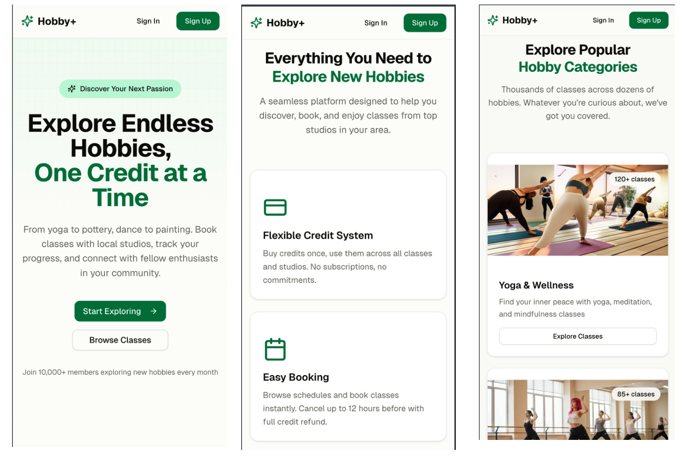

- Type
- Two-sided web platform
- Team
- Five people
- Year
- 2025
- My role
- Front-end lead
The problem
The barrier to trying pottery or dance is rarely interest. It is commitment. Studios sell memberships that only work at one place, so sampling something new means paying for a course you may not continue. The people most likely to drop off are exactly the ones a subscription model punishes hardest.
What we built
Learners buy credits once and spend them at any partner studio, browse by category, book instantly, and cancel up to twelve hours out for a full refund. Studios onboard through a three-step application and manage listings from a partner dashboard. I led the front end, building the client-facing screens from the mobile layouts up.

The decision that mattered
Breaking studio onboarding into three numbered stages with the approval timeline stated up front: submit, wait one to two business days, receive credentials. Business owners are handing over commercial details before they have any reason to trust us. The numbering earns its place because there is a genuine wait in the middle; without it, the pause after submitting reads as a failure.
We made onboarding three visible steps because the first person we tested with asked, out loud, "wait, am I done?"
What I took from it
Writing is interface work. The copy on the onboarding steps did more to reduce drop-off than any layout change, because what people needed was not a prettier form. It was knowing what happens next.